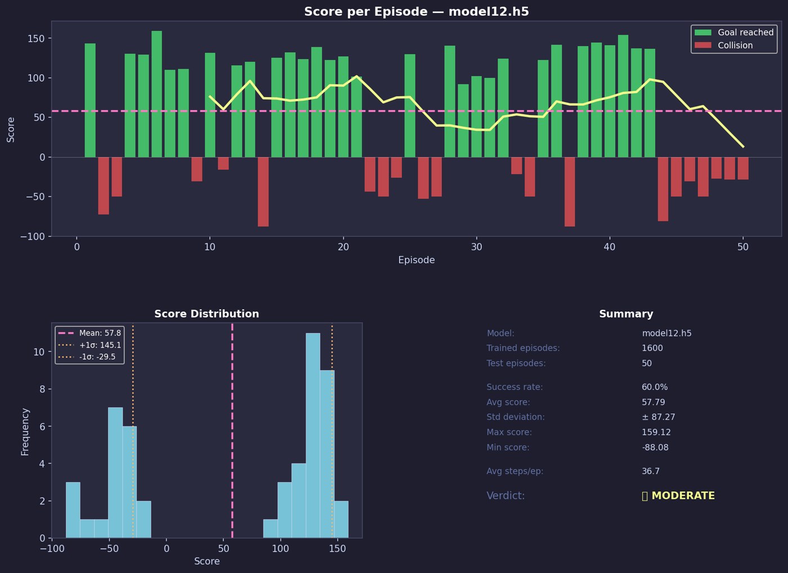

ProjectSIMULATION
Reinforcement learning for robot navigation
Teaching a TurtleBot3 to avoid obstacles from its LiDAR alone. We implemented three deep RL algorithms ourselves in PyTorch, compared them, then showed that the training strategy mattered as much as the algorithm.
- Context
- Team project, IMR
- Date
- Spring 2026
- Team
- 3 students
- Stack
- ROS 2 Humble · Gazebo · PyTorch
01The environment
A Gym-style environment wraps ROS 2: it publishes /cmd_vel, reads /scan and resets the Gazebo simulation.
Reward: +1 in free space, −1 when closer than 0.5 m, −200 and episode end on collision (under 0.2 m). Episodes capped at 500 steps.
02Three algorithms, from scratch
- Policy Gradient (REINFORCE): 24 → 128 → 3 softmax network, discounted and normalised returns.
- DQN: 24 → 1024 → 512 → 3 Q-network, replay buffer of 10,000 transitions, ε-greedy exploration, Bellman target with γ = 0.95.
- Actor-Critic: an actor (24 → 128 → 3) and a critic (24 → 128 → 1); the advantage
A = G − V(s)reduces the variance of the policy update.
03Debugging the training
std(): dof <= 0 and NaN probabilities.
The cause: after the first episode the robot respawned against a wall and crashed at step 1, so every return was −200 and the
normalisation divided by zero. Calling Gazebo's /reset_simulation to put the robot back at the centre fixed it.
- DQN code inherited from a CartPole exercise had several bugs (uninitialised buffer variables, a missing
self,np.arrang). - Faster ε decay, an earlier learning start, and a graded reward (−10 very close, +0.5 at a safe distance) to give the network more signal.
04Curriculum-learning DQN
A second DQN with a distributed ROS 2 service architecture, a goal to reach, and two stages of difficulty:
- State: distance and heading to the goal + 24 LiDAR rays (26 values); 5 steering actions.
- Dense reward: facing the goal, progress toward it, a proximity penalty; +100 on success, −50 on collision.
- Four ROS 2 nodes: Gazebo, goal/reset manager, environment (state and reward), agent.
05Results
| approach | success rate |
|---|---|
| Actor-Critic | 70% |
| Policy Gradient | 60% |
| DQN with curriculum (50 test episodes) | 60% |
| DQN trained directly | <20% |

Takeaway: the same DQN algorithm went from under 20% to 60% success just by changing how it was trained. Without ever reaching a goal early on, the direct DQN learned almost only from crashes. Actor-Critic stayed best thanks to its critic baseline; combining curriculum learning with an actor-critic method such as PPO is the natural next step.